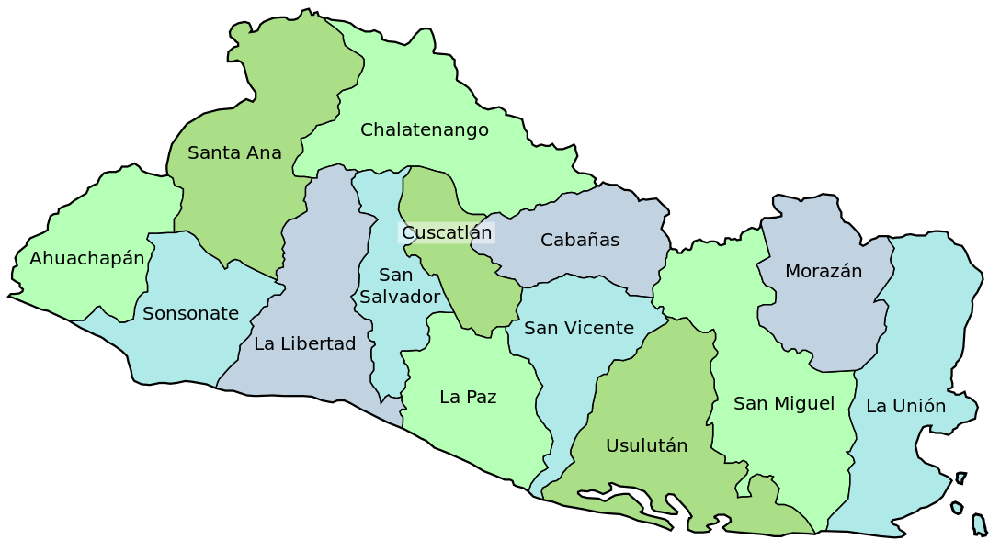

El salvador
Inicio
Comentarios
Work
Contact
Home
About
→ Another action
→ Something else here
→ Another action
→ Something else here
Work
Contact
República de El Salvador

Ahuachapan:
- Su cabecera es Ahuachapan.
- La extensión de su término municipal es de 1 240 km².
- Fechas tradicionales:
- Su población es de 116,948 habitantes.
Sonsonate:
- Su cabecera es Sonsonate.
- La extensión de su término municipal es de 1 226 km².
- Fechas tradicionales:
> 25 de enero al 2 de febrero, en honor a la Virgen de Candelaria.
> 22 al 23 de mayo, en honor a la Santísima Trinidad.
La libertad:
- Su cabecera es Santa Tecla.
- La extensión de su término municipal es de 1 653 km².
- Fechas tradicionales:
> 1 al 31 de diciembre, en honor al nacimiento del Niño Jesús.
> 27 al 29 de junio, en honor de San Pedro Apóstol.
> 15 al 21 de septiembre, en honor de San Mateo.
- Su población es de 121,908 habitantes.
San Salvador:
- Su cabecera es San Salvador.
- La extensión de su término municipal es de 886,15 km².
- Fechas tradicionales:
> 1 al 6 de agosto, en honor del Divino Salvador del Mundo.
> 7 al 15 de agosto en honor de la Virgen del Tránsito.
> 1 al 7 de octubre, en honor de Nuestra Señora del Rosario.
- Su población es de 2 557 761 habitantes.
Santa ana:
- Su cabecera es Santa Ana.
- La extensión de su término municipal es de 2,023 km².
- Fechas tradicionales:
> 17 al 25 de enero, dedicadas a San Antonio de Padua.
> 17 al 26 de julio, en honor de Nuestra Señora de Santa Ana.
> 15 al 20 de enero, en honor de San Sebastián Mártir.
- Su población es de 245,421 habitantes.
Chalatenango:
- Su cabecera es Chalatenango.
- La extensión de su término municipal es de 2 017 km².
- Fechas tradicionales:
> 1 y 2 de noviembre dedicadas a los Santos.
> 18 al 25 de diciembre en honor del Nacimiento del Niño Dios.
> 13 de junio en honor a San Antonio de Padua.
- Su población es de 274 878 habitantes.
Cuscatlan:
- Su cabecera es Cojutepeque.
- La extensión de su término municipal es de 756 km².
- Fechas tradicionales:
> 15 al 25 de julio, en honor a Santiago Apostol.
> 1 al 3 de mayo, en honor de la Santa Cruz.
> 25 al 31 de agosto, en honor de San Ramón.
- Su población es de 216.446 habitantes.
La paz:
- Su cabecera es Zacatecoluca.
- La extensión de su término municipal es de 1 224 km².
- Fechas tradicionales:
> 13 al 27 de diciembre en honor de Santa Lucía, Nuestra Señora de los Pobres.
> 16 al 25 de noviembre en honor de Santa Catarina Mártir.
> 11 al 13 de marzo dedicadas a la Santa Cruz.
- Su población es de 288 022 habitantes.
Cabañas:
- Su cabecera es Sensuntepeque.
- La extensión de su término municipal es de 1 104 km².
- Fechas tradicionales:
> 25 de noviembre al 5 de diciembre, en honor de Santa Bárbara.
> 11 al 22 de enero, en honor a la Señora de Las Misericordias.
San vicente:
- Su cabecera es San vicente.
- La extensión de su término municipal es de 1 184 km².
- Fechas tradicionales:
> 12 al 31 de diciembre en honor a San Vicente Abad.
> 15 al 25 de julio en honor a Santiago Apóstol.
Usulutan:
- Su cabecera es Usulutan.
- La extensión de su término municipal es de 2 130 km².
- Fechas tradicionales:
> 17 al 26 de noviembre, dedicadas a Santa Catarina de Alejandría
- Su población es de 464 883 habitantes.
San miguel:
- Su cabecera es San miguel.
- La extensión de su término municipal es de 2 077 km².
- Fechas tradicionales:
> 21 de noviembre dedicadas a Nuestra Señora de la Paz.
- Su población es de 546 022 habitantes.
Morazan:
- Su cabecera es San francisco gotera.
- La extensión de su término municipal es de 1 447 km².
- Fechas tradicionales:
- Su población es de 251 447 habitantes.
La union:
- Su cabecera es La union.
- La extensión de su término municipal es de 2 074 km².
- Fechas tradicionales: <